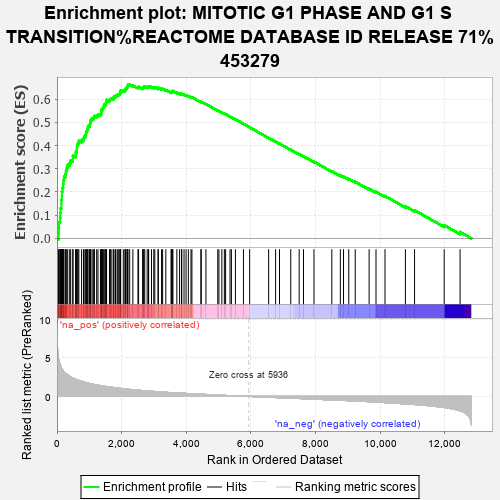

| | | Dataset | carrankstim |
| Phenotype | NoPhenotypeAvailable |
| Upregulated in class | na_pos |
| GeneSet | MITOTIC G1 PHASE AND G1 S TRANSITION%REACTOME DATABASE ID RELEASE 71%453279 |
| Enrichment Score (ES) | 0.66287017 |
| Normalized Enrichment Score (NES) | 2.6037586 |
| Nominal p-value | 0.0 |
| FDR q-value | 0.0 |
| FWER p-Value | 0.0 |
Table: GSEA Results Summary

Fig 1: Enrichment plot: MITOTIC G1 PHASE AND G1 S TRANSITION%REACTOME DATABASE ID RELEASE 71%453279
Profile of the Running ES Score & Positions of GeneSet Members on the Rank Ordered List
| PROBE | GENE SYMBOL | GENE_TITLE | RANK IN GENE LIST | RANK METRIC SCORE | RUNNING ES | CORE ENRICHMENT | | 1 | CDC6 | | | 52 | 4.836 | 0.0210 | Yes |
| 2 | MCM10 | | | 56 | 4.781 | 0.0456 | Yes |
| 3 | CDC45 | | | 62 | 4.689 | 0.0696 | Yes |
| 4 | CDC25A | | | 96 | 4.147 | 0.0885 | Yes |
| 5 | MYBL2 | | | 103 | 4.080 | 0.1092 | Yes |
| 6 | RRM2 | | | 110 | 4.007 | 0.1296 | Yes |
| 7 | CDKN2B | | | 136 | 3.698 | 0.1468 | Yes |
| 8 | ORC6 | | | 137 | 3.687 | 0.1660 | Yes |
| 9 | ORC1 | | | 151 | 3.560 | 0.1834 | Yes |
| 10 | POLE2 | | | 152 | 3.553 | 0.2019 | Yes |
| 11 | TYMS | | | 171 | 3.446 | 0.2184 | Yes |
| 12 | MCM2 | | | 191 | 3.310 | 0.2341 | Yes |
| 13 | TK1 | | | 199 | 3.252 | 0.2504 | Yes |
| 14 | CDKN1A | | | 216 | 3.161 | 0.2656 | Yes |
| 15 | CCNE2 | | | 260 | 2.996 | 0.2778 | Yes |
| 16 | CDT1 | | | 277 | 2.939 | 0.2918 | Yes |
| 17 | MCM4 | | | 304 | 2.882 | 0.3047 | Yes |
| 18 | CDK1 | | | 332 | 2.784 | 0.3170 | Yes |
| 19 | PCNA | | | 393 | 2.604 | 0.3258 | Yes |
| 20 | CDK6 | | | 423 | 2.522 | 0.3366 | Yes |
| 21 | CCNA2 | | | 491 | 2.380 | 0.3437 | Yes |
| 22 | E2F1 | | | 492 | 2.377 | 0.3560 | Yes |
| 23 | MCM5 | | | 577 | 2.232 | 0.3610 | Yes |
| 24 | CDK4 | | | 579 | 2.230 | 0.3725 | Yes |
| 25 | MCM6 | | | 612 | 2.173 | 0.3813 | Yes |
| 26 | GMNN | | | 615 | 2.165 | 0.3924 | Yes |
| 27 | CCNB1 | | | 619 | 2.158 | 0.4034 | Yes |
| 28 | POLA2 | | | 651 | 2.119 | 0.4119 | Yes |
| 29 | CKS1B | | | 676 | 2.088 | 0.4209 | Yes |
| 30 | CCNA1 | | | 760 | 1.963 | 0.4245 | Yes |
| 31 | CDK2 | | | 819 | 1.891 | 0.4298 | Yes |
| 32 | PSMB5 | | | 835 | 1.867 | 0.4383 | Yes |
| 33 | PSMD14 | | | 874 | 1.827 | 0.4448 | Yes |
| 34 | PSMC3 | | | 898 | 1.802 | 0.4523 | Yes |
| 35 | CCND1 | | | 903 | 1.795 | 0.4613 | Yes |
| 36 | MYC | | | 928 | 1.771 | 0.4686 | Yes |
| 37 | POLA1 | | | 950 | 1.748 | 0.4760 | Yes |
| 38 | TOP2A | | | 959 | 1.738 | 0.4844 | Yes |
| 39 | CCND2 | | | 1008 | 1.677 | 0.4894 | Yes |
| 40 | DHFR | | | 1021 | 1.666 | 0.4971 | Yes |
| 41 | PRIM1 | | | 1033 | 1.654 | 0.5048 | Yes |
| 42 | PSMD1 | | | 1046 | 1.642 | 0.5124 | Yes |
| 43 | E2F6 | | | 1088 | 1.602 | 0.5175 | Yes |
| 44 | MCM8 | | | 1134 | 1.559 | 0.5220 | Yes |
| 45 | PSMB2 | | | 1159 | 1.535 | 0.5281 | Yes |
| 46 | PSMA3 | | | 1227 | 1.475 | 0.5305 | Yes |
| 47 | MCM3 | | | 1267 | 1.448 | 0.5349 | Yes |
| 48 | CABLES1 | | | 1343 | 1.390 | 0.5362 | Yes |
| 49 | LIN9 | | | 1365 | 1.379 | 0.5417 | Yes |
| 50 | PSMD12 | | | 1370 | 1.378 | 0.5486 | Yes |
| 51 | PSME2 | | | 1373 | 1.377 | 0.5556 | Yes |
| 52 | POLE | | | 1410 | 1.352 | 0.5597 | Yes |
| 53 | PSMD11 | | | 1425 | 1.344 | 0.5656 | Yes |
| 54 | CCNE1 | | | 1455 | 1.326 | 0.5702 | Yes |
| 55 | MCM7 | | | 1456 | 1.326 | 0.5771 | Yes |
| 56 | PSMA6 | | | 1507 | 1.294 | 0.5799 | Yes |
| 57 | PSMA2 | | | 1514 | 1.290 | 0.5861 | Yes |
| 58 | WEE1 | | | 1530 | 1.282 | 0.5916 | Yes |
| 59 | PSME3 | | | 1533 | 1.278 | 0.5981 | Yes |
| 60 | PSMD3 | | | 1623 | 1.223 | 0.5974 | Yes |
| 61 | PRIM2 | | | 1652 | 1.203 | 0.6014 | Yes |
| 62 | E2F2 | | | 1697 | 1.182 | 0.6041 | Yes |
| 63 | PSMA7 | | | 1753 | 1.144 | 0.6057 | Yes |
| 64 | PSMC1 | | | 1759 | 1.138 | 0.6112 | Yes |
| 65 | FBXO5 | | | 1808 | 1.113 | 0.6132 | Yes |
| 66 | PPP2R1B | | | 1823 | 1.106 | 0.6179 | Yes |
| 67 | PSMB6 | | | 1876 | 1.077 | 0.6194 | Yes |
| 68 | PSMB3 | | | 1910 | 1.058 | 0.6223 | Yes |
| 69 | PSMD7 | | | 1940 | 1.046 | 0.6254 | Yes |
| 70 | PSMC2 | | | 1961 | 1.036 | 0.6292 | Yes |
| 71 | RPA3 | | | 1964 | 1.035 | 0.6344 | Yes |
| 72 | PSMC4 | | | 1970 | 1.032 | 0.6394 | Yes |
| 73 | SKP2 | | | 2051 | 0.996 | 0.6382 | Yes |
| 74 | PSMA1 | | | 2100 | 0.979 | 0.6395 | Yes |
| 75 | PSMA5 | | | 2116 | 0.971 | 0.6434 | Yes |
| 76 | POLE3 | | | 2124 | 0.968 | 0.6479 | Yes |
| 77 | TFDP1 | | | 2165 | 0.953 | 0.6497 | Yes |
| 78 | PSMD8 | | | 2174 | 0.951 | 0.6540 | Yes |
| 79 | DBF4 | | | 2181 | 0.946 | 0.6584 | Yes |
| 80 | PSMD2 | | | 2197 | 0.935 | 0.6621 | Yes |
| 81 | PSMA4 | | | 2248 | 0.908 | 0.6629 | Yes |
| 82 | PSMB7 | | | 2347 | 0.872 | 0.6597 | No |
| 83 | PSMB1 | | | 2504 | 0.806 | 0.6515 | No |
| 84 | RBL1 | | | 2523 | 0.797 | 0.6543 | No |
| 85 | CDC7 | | | 2648 | 0.758 | 0.6484 | No |
| 86 | PSMC5 | | | 2670 | 0.751 | 0.6507 | No |
| 87 | E2F4 | | | 2685 | 0.745 | 0.6534 | No |
| 88 | PSMD6 | | | 2714 | 0.735 | 0.6550 | No |
| 89 | PPP2R2A | | | 2789 | 0.707 | 0.6529 | No |
| 90 | SHFM1 | | | 2827 | 0.695 | 0.6536 | No |
| 91 | PSMC6 | | | 2835 | 0.693 | 0.6566 | No |
| 92 | CDK7 | | | 2922 | 0.666 | 0.6533 | No |
| 93 | LIN52 | | | 2993 | 0.647 | 0.6511 | No |
| 94 | PPP2CA | | | 3025 | 0.636 | 0.6520 | No |
| 95 | POLE4 | | | 3125 | 0.602 | 0.6473 | No |
| 96 | PSMD4 | | | 3133 | 0.599 | 0.6498 | No |
| 97 | RB1 | | | 3234 | 0.572 | 0.6449 | No |
| 98 | PSMB8 | | | 3267 | 0.560 | 0.6453 | No |
| 99 | PSMB4 | | | 3366 | 0.533 | 0.6403 | No |
| 100 | PSMB9 | | | 3532 | 0.493 | 0.6299 | No |
| 101 | PPP2CB | | | 3534 | 0.492 | 0.6323 | No |
| 102 | PSMD5 | | | 3559 | 0.485 | 0.6330 | No |
| 103 | CCNH | | | 3578 | 0.482 | 0.6341 | No |
| 104 | CUL1 | | | 3581 | 0.482 | 0.6364 | No |
| 105 | MNAT1 | | | 3707 | 0.454 | 0.6289 | No |
| 106 | PSMD13 | | | 3792 | 0.435 | 0.6245 | No |
| 107 | PSMD9 | | | 3851 | 0.422 | 0.6221 | No |
| 108 | UBB | | | 3860 | 0.420 | 0.6237 | No |
| 109 | CDKN2A | | | 3929 | 0.404 | 0.6204 | No |
| 110 | PSMB10 | | | 3992 | 0.388 | 0.6175 | No |
| 111 | RPA2 | | | 4062 | 0.374 | 0.6140 | No |
| 112 | PSME1 | | | 4144 | 0.358 | 0.6095 | No |
| 113 | UBC | | | 4173 | 0.348 | 0.6091 | No |
| 114 | AKT1 | | | 4451 | 0.290 | 0.5887 | No |
| 115 | ORC3 | | | 4461 | 0.288 | 0.5895 | No |
| 116 | CDKN2C | | | 4606 | 0.258 | 0.5795 | No |
| 117 | ORC5 | | | 4973 | 0.175 | 0.5515 | No |
| 118 | PPP2R1A | | | 5008 | 0.168 | 0.5497 | No |
| 119 | PSMF1 | | | 5099 | 0.150 | 0.5434 | No |
| 120 | LYN | | | 5176 | 0.137 | 0.5381 | No |
| 121 | PSMD10 | | | 5215 | 0.128 | 0.5358 | No |
| 122 | SKP1 | | | 5352 | 0.100 | 0.5256 | No |
| 123 | ORC2 | | | 5394 | 0.094 | 0.5228 | No |
| 124 | RBBP4 | | | 5518 | 0.072 | 0.5135 | No |
| 125 | RPA1 | | | 5767 | 0.027 | 0.4940 | No |
| 126 | CCND3 | | | 5959 | -0.004 | 0.4790 | No |
| 127 | RPS27A | | | 6546 | -0.106 | 0.4333 | No |
| 128 | E2F5 | | | 6762 | -0.142 | 0.4170 | No |
| 129 | LIN54 | | | 6882 | -0.162 | 0.4085 | No |
| 130 | HDAC1 | | | 7230 | -0.225 | 0.3823 | No |
| 131 | ABL1 | | | 7490 | -0.271 | 0.3632 | No |
| 132 | UBA52 | | | 7624 | -0.292 | 0.3543 | No |
| 133 | AKT2 | | | 7948 | -0.347 | 0.3306 | No |
| 134 | DYRK1A | | | 8500 | -0.449 | 0.2894 | No |
| 135 | PPP2R3B | | | 8764 | -0.500 | 0.2713 | No |
| 136 | CDKN2D | | | 8862 | -0.517 | 0.2663 | No |
| 137 | ORC4 | | | 9024 | -0.550 | 0.2564 | No |
| 138 | LIN37 | | | 9224 | -0.589 | 0.2438 | No |
| 139 | AKT3 | | | 9654 | -0.677 | 0.2134 | No |
| 140 | E2F3 | | | 9867 | -0.729 | 0.2005 | No |
| 141 | JAK2 | | | 10145 | -0.796 | 0.1828 | No |
| 142 | MAX | | | 10776 | -0.964 | 0.1381 | No |
| 143 | TFDP2 | | | 11059 | -1.045 | 0.1212 | No |
| 144 | CDKN1B | | | 11976 | -1.437 | 0.0564 | No |
| 145 | RBL2 | | | 12467 | -1.860 | 0.0274 | No |
Table: GSEA details [plain text format]
Fig 2: MITOTIC G1 PHASE AND G1 S TRANSITION%REACTOME DATABASE ID RELEASE 71%453279: Random ES distribution
Gene set null distribution of ES for MITOTIC G1 PHASE AND G1 S TRANSITION%REACTOME DATABASE ID RELEASE 71%453279